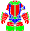

หน้าแรก › เอาตัวรอด
สภาพอากาศและค่าดัชนีแปรผัน ใช้ได้
อากาศเปลี่ยนทุก 20 นาทีต่อเกาะ · เกาะภูเขาไฟมีพายุภูเขาไฟ (กันด้วยชุดหรือบ่อน้ำร้อน) · ฤดูกาลหมุนทุก 7 วัน · ค่าดัชนีแปรผัน (Index 1–10) ทำให้เกาะโหดขึ้นและต้องมีระดับความต้านสภาพอากาศก่อนล่องเรือไป
แต่ละเกาะมีอากาศของตัวเองตามภูมิประเทศ (ป่าเขตร้อนฝนบ่อย ทะเลทรายแดดจัด ทุ่งหิมะหิมะตก) และอากาศมีผลจริง: เดินช้าลง นักล่ามองเห็นใกล้ลง ฝนรดน้ำแปลงผัก พายุดับกองไฟ ส่วนเกาะไม่เสถียรมี ค่าดัชนีแปรผัน (Index) ยิ่งสูงยิ่งอันตรายแต่ยิ่งคุ้ม
สิ่งที่ทำได้
- ดูอากาศตอนนี้บนนาฬิกาของจอ แล้ววางแผนออกไปทำงาน
- ใช้ฝนรดน้ำแปลงปลูก · หลบพายุในที่พัก
- เห็นลางบอกเหตุบนเกาะภูเขาไฟแล้วเตรียมตัว — สวมชุดกันพายุหรือลงแช่บ่อน้ำร้อน
- เลือกเกาะตาม Index บนหน้าล่องเรือ
- สะสม ระดับความต้านสภาพอากาศ ด้วยการอยู่บนเกาะภูมิอากาศนั้น เพื่อปลดล็อกเกาะ Index สูง
อากาศของแต่ละเกาะ ใช้ได้
อากาศเปลี่ยนทุก 20 นาที (สุ่มซ้ำแบบเดิมได้ = อากาศเดิมยาวขึ้น) ทุกคนบนเกาะเดียวกันเห็นอากาศเดียวกัน โอกาสของแต่ละแบบขึ้นกับกลุ่มเกาะ (ค่าก่อนผลของฤดูกาล):
| กลุ่มเกาะ | แจ่มใส | เมฆครึ้ม | ฝน | ฝนหนัก | หิมะ | หิมะหนัก | เถ้าภูเขาไฟ |
|---|---|---|---|---|---|---|---|
| เซฟเฮ้าส์ | 65% | 25% | 10% | – | – | – | – |
| อังโคร่า | – | – | – | – | – | – | 100% |
| ป่าอบอุ่น · ทุ่งหญ้า/สะวันนา · เกาะเทม | 50% | 25% | 18% | 7% | – | – | – |
| ป่าเขตร้อน | 40% | 20% | 28% | 12% | – | – | – |
| ทะเลทราย | 85% | 15% | – | – | – | – | – |
| บึง | 30% | 35% | 25% | 10% | – | – | – |
| ทุนดรา | 40% | 25% | – | – | 25% | 10% | – |
| ทุ่งหิมะ | 25% | 25% | – | – | 30% | 20% | – |
| ภูเขาไฟ | 36% | 24% | – | – | – | – | 20% |
- เกาะภูเขาไฟอีก 20% ของเวลาเป็น ลางบอกเหตุ 10% และ พายุภูเขาไฟ 10% (ด้านล่าง) — ส่วนนี้ฤดูกาลไม่เปลี่ยน
- เกาะอีเวนต์ทุนดรา (เลเวล 35) มีหิมะหนักตลอดเวลา
อากาศมีผลอะไร ใช้ได้
| อากาศ | ความเร็วเดิน | ระยะที่นักล่าเห็นคุณ | ความเหนื่อยล้าเพิ่ม/นาที | อื่น ๆ |
|---|---|---|---|---|
| แจ่มใส · เมฆครึ้ม | ปกติ | ปกติ | – | – |
| ฝน | ×0.95 | ×0.8 | 0.2 | ตัวเปียก · ตอนฝนเริ่มรดน้ำแปลงปลูก 1 หน่วย |
| ฝนหนัก | ×0.9 | ×0.6 | 0.5 | ตัวเปียก · รดน้ำ 2 หน่วย · ดับกองไฟ/เตาที่ผู้เล่นจุดไว้ (ยกเว้นที่อยู่ในบ้าน) |
| หิมะ | ×0.92 | ×0.8 | 0.3 | – |
| หิมะหนัก | ×0.85 | ×0.5 | 0.8 | ตัวเปียก · ดับกองไฟ/เตา (ยกเว้นที่อยู่ในบ้าน) |
| เถ้าภูเขาไฟ | ×0.95 | ×0.6 | 1.0 | – |
| ลางบอกเหตุ (ภูเขาไฟ) | ปกติ | ปกติ | – | สถานะ ลางบอกเหตุ — ความแข็งแรงลด |
| พายุภูเขาไฟ | ×0.85 | ×0.4 | 1.5 | สถานะ พายุภูเขาไฟ — สุขภาพลด (ด้านล่าง) |
- กองไฟที่ฝนหนัก/หิมะหนักดับ ต้องจุดใหม่ภายใน 1 นาทีไม่งั้นหายไป (กองไฟมอดและหาย)
- อากาศแรง สัตว์ป่าหยุดพักบ่อยขึ้น (โอกาสพักต่อรอบ ปกติ 30% → ฝน/หิมะ 40% · ฝนหนัก/หิมะหนัก 60% · เถ้า 50% · พายุภูเขาไฟ 70%)
- ความเหนื่อยล้าและเดินช้าจากอากาศเกิดทุกเกาะ ยกเว้นเซฟเฮ้าส์และอังโคร่า (สองเกาะนี้ยังเห็นฝน/เถ้าบนจอ ตัวยังเปียก และอุณหภูมิร่างกายยังเปลี่ยน) — เกาะอื่นหลบเข้าที่พักระหว่างพายุ
- ความเหนื่อยล้าจากอากาศขึ้นบนจอเป็นหมวด: ฝน/ฝนหนัก = ร้อนชื้น · หิมะ = ความหนาวเย็น · หิมะหนัก = พายุหิมะ · เถ้า/พายุภูเขาไฟ = ความร้อนภูเขาไฟ — ต้านทานชนิดนั้นลดได้ (ด้านล่าง)
- อากาศยังเปลี่ยนอุณหภูมิร่างกาย — ตารางที่ การเอาตัวรอด
ความเร็วเดินและการซ่อนตัว ใช้ได้
- ตัวคูณความเร็วเดินในตารางคูณกับความเร็วเดินของคุณ: ปกติ 500 × (1 + โบนัสความเร็วจากของที่สวม) สูงสุด 1000 — เช่น ชุดนินจา (+10%) เดิน 550 · ตากฝน 522 · ความเร็วตอนสู้ดูที่ ค่าสถานะตัวละคร
- ระยะที่นักล่าเห็นคุณ ยังถูกหารด้วยค่า ซ่อนตัว ของคุณอีกชั้น (สั้นลงได้ราว 1 ไทล์) — ดู สัตว์ป่า
พายุภูเขาไฟ ใช้ได้
เกาะภูเขาไฟทั้ง 6 เกาะมีรอบพายุ: ก่อนพายุทุกครั้งมี ลางบอกเหตุ 1 ช่วง (20 นาที) แล้วตามด้วย พายุภูเขาไฟ 1 ช่วง (20 นาที) · อย่างละราว 10% ของเวลา เฉลี่ยเกาะละครั้งทุกราว 3 ชั่วโมง 20 นาที
| ช่วง | สถานะที่ติด | ผล |
|---|---|---|
| ลางบอกเหตุ | ลางบอกเหตุ | ความแข็งแรง −5.2/วินาที (ฟื้นเองได้แค่ +5/วินาที) |
| พายุภูเขาไฟ | พายุภูเขาไฟ | สุขภาพ −10/วินาที (600 ต่อนาที) · เดิน ×0.85 · ความเหนื่อยล้า +1.5/นาที · อุณหภูมิเป้าหมาย +1.5° |
- สถานะหายทันทีเมื่ออากาศเปลี่ยน ออกจากเกาะ หรือตาย (ไม่มีตัวนับถอยหลัง)
- สุขภาพคือเพดานของพลังชีวิต — ยืนตากพายุไม่กี่สิบวินาทีหลอดก็แทบหมด ถ้าไม่มีของกัน ให้หนีออกจากเกาะหรือลงบ่อน้ำร้อนตั้งแต่เห็นลางบอกเหตุ
กันพายุ (กันได้ทั้งลางบอกเหตุและพายุ รวมความเหนื่อยล้าจากพายุ)
- สวม

ชุดนักขุดแร่พายุภูเขาไฟ (คราฟต์ที่โต๊ะตัดเย็บ) หรือ ชุดนักดับเพลิง / หมวกนักดับเพลิง → ได้สถานะ ภูมิต้านทานพายุภูเขาไฟ ตลอดที่สวม · ชิ้นที่ความทนหมดกันไม่ได้จนกว่าจะซ่อม - ลงแช่ บ่อน้ำร้อน (ด้านล่าง)
บ่อน้ำร้อน ใช้ได้
ทะเลสาบบนเกาะภูเขาไฟคือ บ่อน้ำร้อน
- ยืนหรือเดินในบ่อ → แช่ตัวในน้ำพุร้อน: กันพายุภูเขาไฟ · ความเหนื่อยล้าจากความร้อนภูเขาไฟ −20% · ขึ้นจากบ่อแล้วยังอยู่ต่ออีก 10 วินาที
- กด ล้าง ที่บ่อ → ได้สุ่ม 1 อย่างแทน ล้างตัว: การอาบน้ำที่น้ำพุร้อน: การฟื้นฟูสุขภาพ (สุขภาพ +2/วินาที นาน 4 นาที) หรือ การอาบน้ำที่น้ำพุร้อน: บัฟการโจมตี (โจมตี +16 นาน 4 นาที) · และได้ แช่ตัวในน้ำพุร้อน แทน ความเปียก
ความต้านทานอากาศจากชุด ใช้ได้
ชุด หมวก ถุงมือ และรองเท้าหลายชิ้นมีคุณสมบัติ ต้านทาน (ชุดใบไม้ต้านทานความร้อน ชุดหนังต้านทานความหนาวเย็น ฯลฯ) · ค่ารวมจากของที่สวม สถานะ ฉายา และอาหาร แสดงในหน้าค่าสถานะแท็บการเอาตัวรอด · ระดับต้านทานบนชิ้น = ระดับตามแบบของชิ้น + คุณสมบัติแฝง (คุณสมบัติของไอเทม)
- ต้านทานชนิดที่ตรงกัน 1 แต้ม = ความเหนื่อยล้าหมวดนั้นลด 3% ลดได้สูงสุด 90% (30 แต้มขึ้นไป)
- ต้านทานชนิด ตรงข้าม ทำให้หมวดนั้นเหนื่อยเพิ่ม 1% ต่อแต้ม (สูงสุด 2 เท่า) · ใส่ทั้งสองชนิดพร้อมกัน ผลคูณกัน
- ใช้กับความเหนื่อยล้าจาก ภูมิอากาศเกาะ และ อากาศตอนนี้ · ความเหนื่อยล้าจาก ค่าดัชนีแปรผัน ลดด้วยต้านทานชนิดประจำภูมิอากาศเกาะ (ไม่มีชนิดตรงข้าม) · ความเหนื่อยล้าจากเลเวลเกาะไม่ลด
- ต้านทานเดียวกันนี้ลดผลของภูมิอากาศและอากาศต่อ อุณหภูมิร่างกาย ด้วย (การเอาตัวรอด)
- ไม่เกี่ยวกับ ระดับความต้านสภาพอากาศ ที่ใช้ปลดล็อกเกาะ Index สูง (ด้านล่าง) — อันนั้นยังขึ้นจากการอยู่บนเกาะเท่านั้น
| ความเหนื่อยล้าหมวด | ต้านทานที่ลด | ต้านทานที่ทำให้เพิ่ม |
|---|---|---|
| ความร้อน · ความร้อนจัด | ต้านทานความร้อน | ต้านทานความหนาวเย็น |
| ความหนาวเย็น · หนาวจัด | ต้านทานความหนาวเย็น | ต้านทานความร้อน |
| ร้อนชื้น | ต้านทานความชื้น | ต้านทานลม |
| ลมแรง | ต้านทานลม | ต้านทานความชื้น |
| ความร้อนภูเขาไฟ | ต้านทานความร้อนภูเขาไฟ | ต้านทานความหนาวเย็น |
| ดวงอาทิตย์แผดเผา | ต้านทานแสงแดดเผา | — |
| พายุหิมะ | ต้านทานหิมะ | — |
| พิษ | ต้านทานพิษ | — |
| แห้ง · เลเวลเกาะ | — | — |
| ตัวอย่าง | ไม่มีต้านทาน | มีต้านทาน |
|---|---|---|
| เกาะภูเขาไฟ Lv60 + ถุงมือทนกระแสความร้อน Lv60 (+12) | 10.5/นาที | 6.72/นาที |
| เกาะร้อน + ต้านทานความร้อน +10 | 6.0/นาที | 4.2/นาที |
| เกาะร้อน + ต้านทานความร้อน +30 ขึ้นไป | 6.0/นาที | 0.6/นาที (ลดสูงสุด 90%) |
| เกาะร้อน + ต้านทานความหนาวเย็น +20 | 6.0/นาที | 7.2/นาที |
| Index บนเกาะภูมิอากาศ | ป่าเขตร้อน | ทะเลทราย | ทุนดรา | ทุ่งหิมะ | บึง | ภูเขาไฟ |
|---|---|---|---|---|---|---|
| ต้านทานที่ลดความเหนื่อยล้าจาก Index | ความร้อน | แสงแดดเผา | ความหนาวเย็น | ลม | ความชื้น | ความร้อนภูเขาไฟ |
ฤดูกาล ใช้ได้
โลกทั้งใบมี 4 ฤดูเรียงกัน ฤดูละ 7 วัน (ครบรอบ 28 วัน) เปลี่ยนทุก วันพฤหัสบดี 07:00 น. (เวลาไทย)
| ฤดู | อากาศที่มาบ่อยขึ้น / น้อยลง | เวลาที่พืชกลับมาให้เก็บ | สัตว์ขยายพันธุ์ |
|---|---|---|---|
| ใบไม้ผลิ | ฝน ×1.5 · ฝนหนัก ×1.3 · แจ่มใส ×0.85 | เร็วขึ้น (×0.77) | ×1.25 |
| ร้อน | แจ่มใส ×1.4 · ฝน ×0.75 · ฝนหนัก ×0.7 | ปกติ | ×1 |
| ใบไม้ร่วง | เมฆครึ้ม ×1.35 · ฝน ×1.2 · แจ่มใส ×0.9 | ช้าลง (×1.43) | ×0.75 |
| หนาว | หิมะ ×1.5 · หิมะหนัก ×1.4 · เมฆครึ้ม ×1.1 · แจ่มใส ×0.65 | ช้าลง (×1.67) | ×0.45 |
- ฤดูแค่ถ่วงน้ำหนัก — หิมะยังตกเฉพาะเกาะที่มีหิมะอยู่แล้ว (ทุนดรา/ทุ่งหิมะ) ทะเลทรายหน้าหนาวก็ไม่มีหิมะ
- วันในเกม 1 วัน = 48 นาทีจริง
ค่าดัชนีแปรผัน (Index) ใช้ได้
เกาะไม่เสถียรทุกเกาะเลเวล 15 ขึ้นไปมี ค่าดัชนีแปรผัน 1–10 แสดงบนหน้าล่องเรือ
| แบบเกาะ | Index |
|---|---|
| พื้นที่ที่มี 4 เกาะ (บึง ทะเลทราย ป่าอบอุ่น ป่าเขตร้อน ป่าเขตร้อนสีคราม สะวันนา ทุ่งหิมะ ทุนดรา ภูเขาไฟ) | คงที่ 1 · 4 · 7 · 10 เกาะละค่า — เลือกเกาะที่ต้องการจากหน้าล่องเรือ |
| พื้นที่ที่มีเกาะเดียว (เลเวล 15 · 20 · 25 · 30) | ขึ้นทีละ 1 ทุกครั้งที่เกาะหมดอายุและเกิดใหม่ (1 → 2 → … → 10 → 1) — ไม่เปลี่ยนระหว่างอายุเกาะ |
| เซฟเฮ้าส์ · อังโคร่า · เกาะเทม · เกาะฝึก · เมืองร้าง · เกาะอีเวนต์ | 1 เสมอ |

Index สูงขึ้นแล้วเป็นอย่างไร
| Index | ความเหนื่อยล้าเพิ่ม/นาที | พลังชีวิต/พลังโจมตีสัตว์ | EXP ภารกิจองค์กร | ระดับความต้านสภาพอากาศที่ต้องมี |
|---|---|---|---|---|
| 1 | – | ×1 | ×1 | – |
| 2 | 1.0 | ×1.25 | ×2.2 | – |
| 3 | 1.5 | ×1.5 | ×4.5 | 3 |
| 4 | 2.0 | ×1.75 | ×6.3 | 7 |
| 5 | 2.5 | ×2 | ×9.1 | 12 |
| 6 | 3.0 | ×2.25 | ×11.4 | 17 |
| 7 | 3.5 | ×2.5 | ×14.4 | 25 |
| 8 | 4.0 | ×2.75 | ×17.6 | 35 |
| 9 | 4.5 | ×3 | ×21.1 | 43 |
| 10 | 5.0 | ×3.25 | ×24.7 | 51 |
- เกาะไม่เสถียรทุกเกาะ ทุก Index (รวม Index 1) หลุมอุกกาบาตเป็น คลังถาวร: มีของธรรมชาติพิเศษ 10 ชิ้นรอบหลุม และสัตว์เฝ้า 3 ตัวที่แกร่งกว่าปกติ 1.5 เท่า (คูณ Index อีกชั้น) · หลุมบางหลุมเป็นปล่องภูเขาไฟสงบ (ต้องใช้หินเรียกทรัพยากรเปิด) — เกาะและการเดินทาง
- ของที่เก็บได้บนเกาะ Index สูงมีแท็กแฝงระดับสูงขึ้น — ดู แท็ก
- เกาะ Index 2 ขึ้นไปนับเป็น เกาะชั่วคราว: ออกเกมบนเกาะนี้ ล็อกอินครั้งหน้าจะไปโผล่ที่จุดพักหรือเซฟเฮ้าส์ — ดู การตาย
- เลเวลสูงมีหลอดความเหนื่อยล้ายาวขึ้น (Lv60 = 676) จึงอยู่บนเกาะ Index สูงได้นานขึ้น — เพดานตามเลเวล · ดูแยกว่าเหนื่อยเพราะอะไรได้ที่ หน้าความเหนื่อยล้า
ระดับความต้านสภาพอากาศ ใช้ได้
ล่องเรือไปเกาะ Index 3 ขึ้นไปต้องมี ระดับความต้านสภาพอากาศ ของภูมิอากาศเกาะนั้นถึงเกณฑ์ (ตารางด้านบน) — ไม่ถึง หน้าล่องเรือจะขึ้นเงื่อนไขสีแดงและเซิร์ฟปฏิเสธการออกเรือ (การกลับที่ดินตัวเอง/เซฟเฮ้าส์ไม่ถูกเช็ก) · เกรดบุกเบิกไม่ล็อกเกาะแล้ว — ทุกเกรดเลือกเกาะ Index ไหนก็ได้ ขอแค่ผ่านด่านต้านทาน (เกรดบุกเบิกยังเพิ่มขนาดที่ดินตามเดิม)
วิธีเพิ่ม: แค่อยู่บนเกาะภูมิอากาศนั้น (ออนไลน์) ค่าจะขึ้นเอง ยิ่ง Index ของเกาะสูงยิ่งขึ้นเร็ว
| ภูมิอากาศที่มีค่าความต้านของตัวเอง | ป่าเขตร้อน · ทะเลทราย · ทุนดรา · ทุ่งหิมะ · บึง · ภูเขาไฟ |
|---|---|
| ป่าอบอุ่น · ทุ่งหญ้า/สะวันนา | ไม่มีค่าของตัวเอง — ใช้ ค่าความต้านที่สูงที่สุดที่คุณมี ชนิดใดก็ได้ |
| ความเร็วที่ขึ้น | 300 แต้ม/วินาที × (1 + 0.5 × (Index − 1)) |
| ถึงระดับ | เวลาบนเกาะ Index 1 | Index 4 | Index 7 |
|---|---|---|---|
| 3 (เข้า Index 3) | 45 นาที | 18 นาที | 11 นาที |
| 7 (เข้า Index 4) | 4.0 ชม. | 1.6 ชม. | 1.0 ชม. |
| 12 (เข้า Index 5) | 10.3 ชม. | 4.1 ชม. | 2.6 ชม. |
| 17 (เข้า Index 6) | 18.4 ชม. | 7.4 ชม. | 4.6 ชม. |
| 25 (เข้า Index 7) | 34.3 ชม. | 13.7 ชม. | 8.6 ชม. |
| 35 (เข้า Index 8) | 57.9 ชม. | 23.2 ชม. | 14.5 ชม. |
| 43 (เข้า Index 9) | 77.9 ชม. | 31.2 ชม. | 19.5 ชม. |
| 51 (เข้า Index 10) | 98.9 ชม. | 39.6 ชม. | 24.7 ชม. |
- ระดับความต้านสูงสุดคือ 51 (ตามตารางเลเวลของเกมต้นฉบับ) — เกาะ Index 9 และ 10 จึงล่องเรือไปได้เมื่อสะสมถึง 43 / 51 · exp ต้านทานที่สะสมเกิน Lv.51 ไว้แล้วไม่หาย แค่แสดงเป็น Lv.51 และเข้าได้ทุก Index
- ดูระดับของแต่ละภูมิอากาศได้ที่แถว ความทนทานร่างกาย ในหน้าความสามารถของตัวละคร (ต่อจากแถวต่อสู้ · คราฟต์ · เก็บของ) แล้วกดดู รายละเอียดความทนทานร่างกาย — เซิร์ฟนี้โชว์แถวนี้ ตั้งแต่เลเวล 1 (เกมต้นฉบับโชว์เมื่อเลเวลตัวละครตันแล้ว)